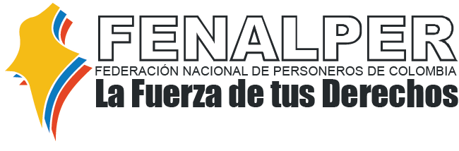
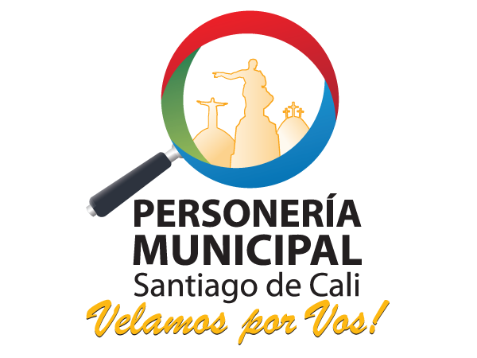
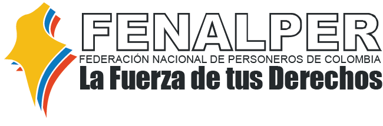
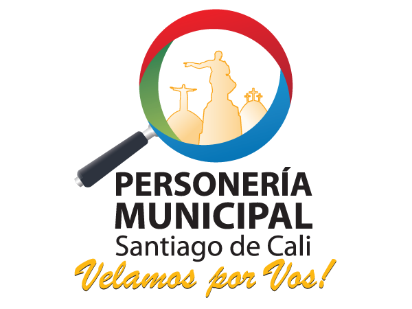

Acerca de
APPersoneria Version 1.0
Aplicación desarrollada por el grupo APPoyarte conformado por: Moises Elias Valera, Jiovanny Villamil y Pedro Jose Daza, en la maratón "APPuesta social", organizada por el ministerio de Tecnología y Comunicaciones de Colombia, para el uso institucional de FENALPER, Federación Nacional de Personerias.
Bogotá - Colombia, 2014
APPersoneria es un medio directo de comunicación con asesores de personerías de los diferentes municipios de Colombia, que busca atender y apoyar a la ciudadanía cuando necesiten orientación e información para saber que hacer frente a cualquier hecho que genere conflicto o que impacte de cualquier manera los derechos humanos de acuerdo a criterios establecidos por la constitución colombiana.
 


